고전 명저를,
이야기로 풀어 읽다.
고대 세계의 전략과 지혜와 이야기 — 손자, 노자, 삼십육계 등 — 를 쉬운 영어로 다시 전합니다. 어려운 용어도, 강의도 없습니다.
인물로 보기
Queens
The firm is handed to you — or you take it — then you hold it.
Sages & Strategists
The house line — ancient teachers and strategists whose books we publish.
Commanders
Expansion, and the price of it.
Kings
His story is the crown itself: taking it, keeping it, remaking the state around it.
Minds
They lived by their heads — the idea, the work, the art was the battlefield.
Pioneers
They bet everything — life, money, freedom — on a road nobody had walked.
Wildcards
The person and the legend fight — and the legend is half the story.
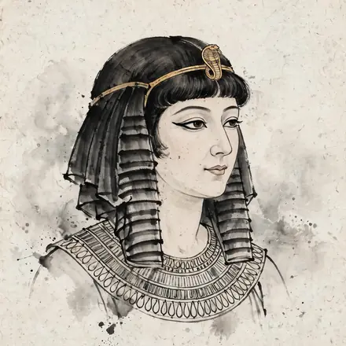
A twenty-one-year-old queen smuggled herself into her own palace in a sack to pitch Julius Caesar — and talked her way back onto the throne.
이야기 · 공개 중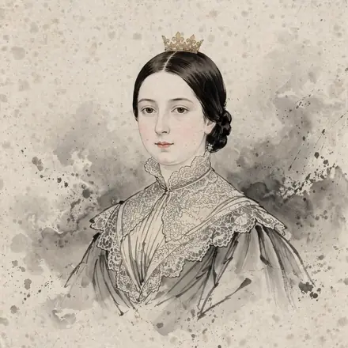
At 6 a.m. an eighteen-year-old walked downstairs, accepted the largest empire on earth, and gave her first royal order: move my bed out of my mother's room.
이야기 · 공개 중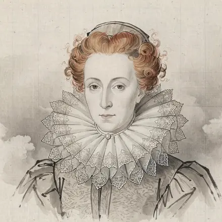
In the Tower, suspected of treason, she bought her life with a letter — written in her largest hand, so the tide would miss the boat.
이야기 · 공개 중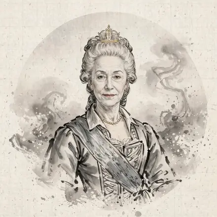
She arrived at fourteen with no Russian, no money, and one job: marry the heir, produce an heir, cause no trouble.
이야기 · 공개 중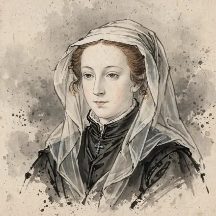
A queen at six days old, a widow before eighteen, deposed at twenty-four, a prisoner for nineteen years — and her son still ended up with both crowns.
이야기 · 공개 중
고요한 다섯 자루의 글을 남기고 사라진 노인.
수면 이야기 · 제작 중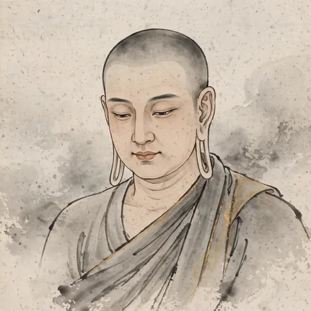
The heir of a small valley clan walked out of the palace at twenty-nine and never took another job — he spent forty-five years as a wandering teacher, and the resignation is still running.
이야기 · 공개 중
예순 번의 결투, 패배는 없었다 — 그리고 붓을 들었다.
곧 공개
떠돌이 스승, 그의 제자들이 제국을 바꿨다.
곧 공개
전쟁이 시작되기 전에 이미 이겨 둔 장군.
영상 + 책 · 공개 중Every general before him who won a revolution kept the power.
이야기 · 공개 중The most famous speech in American history took two minutes and followed a two-hour speech nobody remembers.
이야기 · 공개 중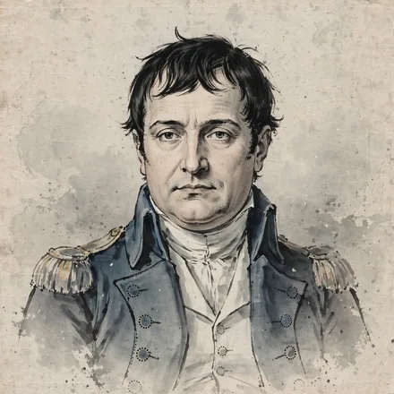
He was a broke, struck-off general when Paris handed him a cannon.
이야기 · 공개 중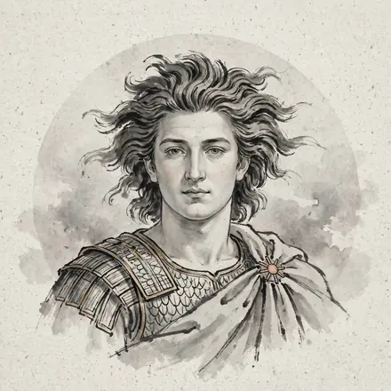
He did not build the weapon; he inherited it, loaded and aimed.
이야기 · 공개 중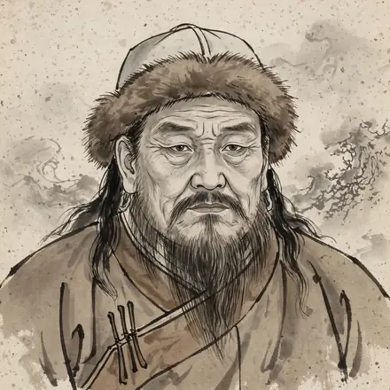
초원을 통일하고 세계 지도를 다시 그린 고아.
이야기 · 공개 중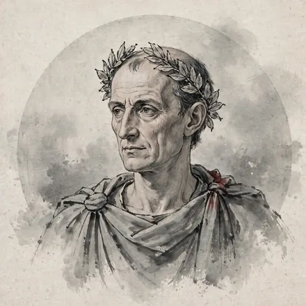
Captured by pirates at twenty-five, he laughed at their price and told them to double it.
이야기 · 공개 중The Crusaders took Jerusalem in blood in 1099.
이야기 · 공개 중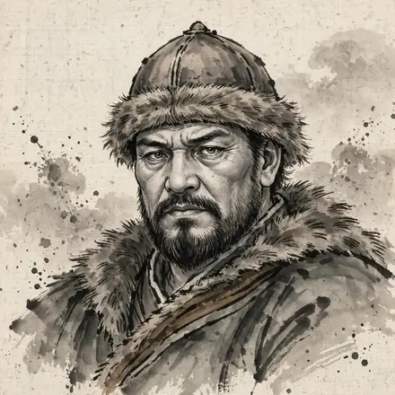
Rome paid him in gold, every year, not to visit.
이야기 · 공개 중His love letters survive.
이야기 · 공개 중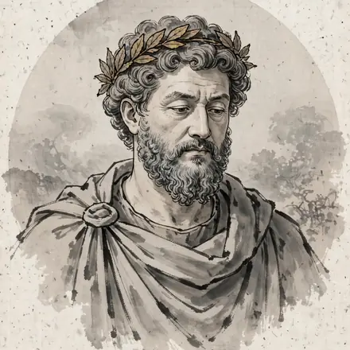
Adopted, vetted and trained for twenty-three years, he was the ancient world's best-prepared chief executive.
이야기 · 공개 중King at four, humiliated by revolt, boss at twenty-two by his own decree.
이야기 · 공개 중
The emperor who rebuilt Europe's schools could not write his own name.
이야기 · 공개 중Installed at nine as the face of a bankrupt rebrand, dead at nineteen, erased by his own government — and found, three thousand years later, under a rubbish heap, richer than any remembered king.
이야기 · 공개 중No lab, no grant, no university post — a government clerk with a baby, a salary, and four papers in one year that changed what time means.
이야기 · 공개 중A glover's son with no university bought into the building.
이야기 · 공개 중The man who weighed the Moon ended up weighing pennies: plague-year genius, Cambridge chair, and England's most relentless hunter of fake coin.
이야기 · 공개 중No salary, no pension, no safety net — just subscriptions, pupils, commissions and cash flow.
이야기 · 공개 중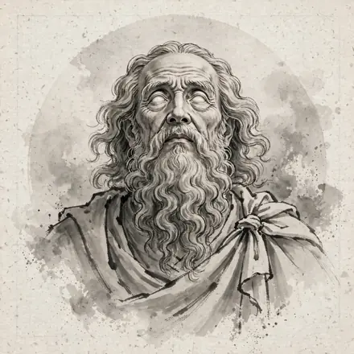
No desk, no manuscript, no certain existence — just a voice by the fire and two poems that educated a civilisation for a thousand years.
이야기 · 공개 중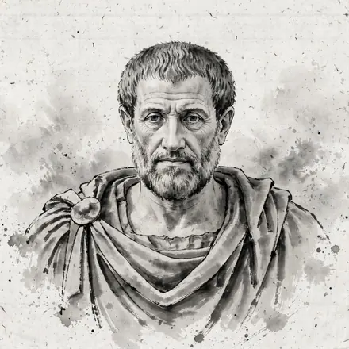
Socrates filed nothing and wrote nothing.
이야기 · 공개 중A musician's ears are his tools, his shop and his licence to work.
이야기 · 공개 중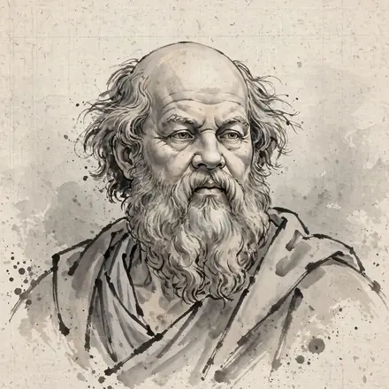
He had no school, no premises, no book, no sign.
이야기 · 공개 중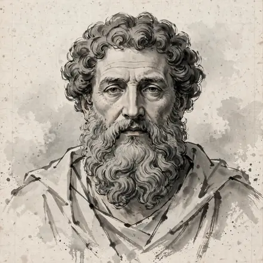
Socrates had trusted the marketplace: show up, talk, let the truth fend for itself.
이야기 · 공개 중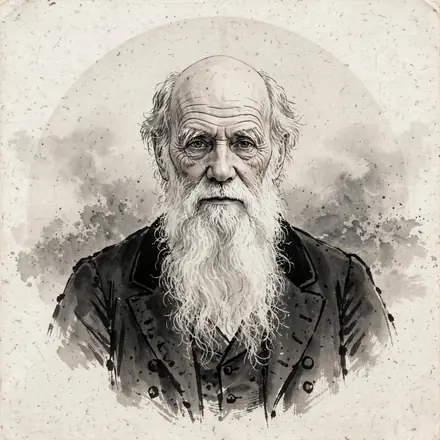
He had the theory of evolution written out and locked in a drawer while he spent eight years describing barnacles.
이야기 · 공개 중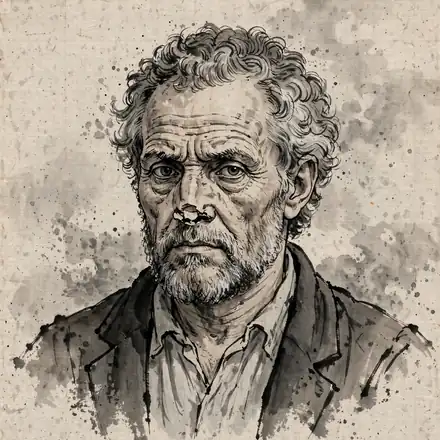
He signed his letters 'Michelangelo, sculptor' while painting the most famous ceiling on earth.
이야기 · 공개 중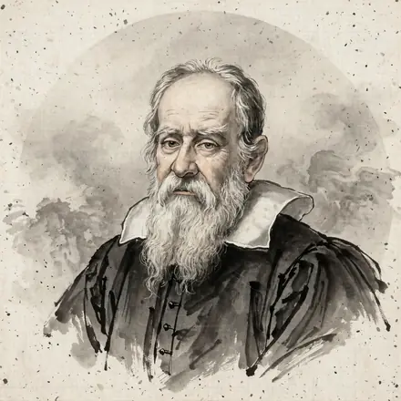
He turned a Dutch toy into a product launch, a bestseller and a court title.
이야기 · 공개 중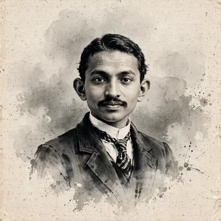
A first-class ticket, a freezing platform, and a shy young barrister who could not finish a speech in court.
이야기 · 공개 중A weaver's son with the wrong maths spent the better part of a decade in royal waiting rooms, talked two monarchs into funding an impossible voyage on a founder's terms — and survived his own bad numbers only because a continent was in the way.
이야기 · 공개 중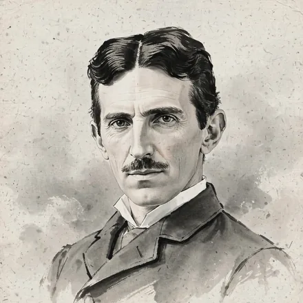
He arrived in New York with four cents and a letter introducing him as a great man.
이야기 · 공개 중Barred from every university in her own country, she spent years as a governess in other people's houses to buy two educations — her sister's and then her own.
이야기 · 공개 중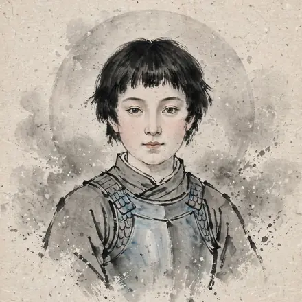
She could not read, had never held a command, and was seventeen.
이야기 · 공개 중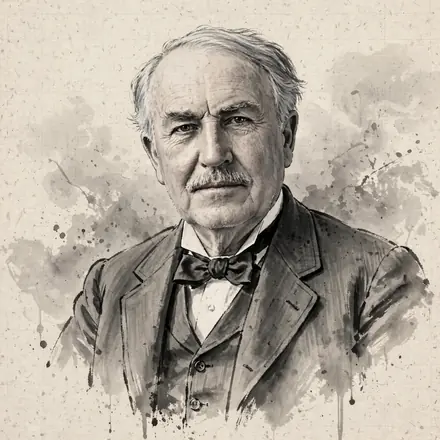
The phonograph made him a wizard, but the magic was a system: a lab full of "muckers" working to a quota.
이야기 · 공개 중The most famous scene in the Reformation — a monk nailing his protest to a church door — probably never happened.
이야기 · 공개 중Marco Polo went to China at seventeen as the unpaid intern on his family's import account and came home twenty-four years later with the most valuable cargo a merchant can carry: information.
이야기 · 공개 중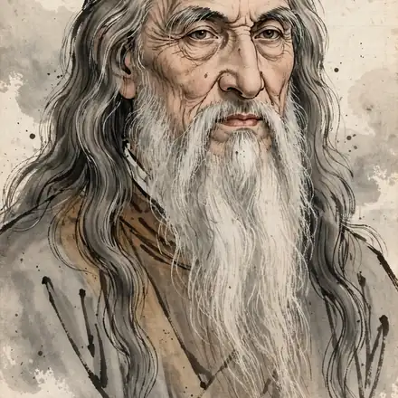
No degree, no Latin, no family firm — so he pitched a duke nine paragraphs of weapons and mentioned the painting at the end.
이야기 · 공개 중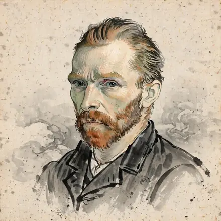
One stillborn brother's name on a gravestone, two careers, two dismissals, one confirmed sale.
이야기 · 공개 중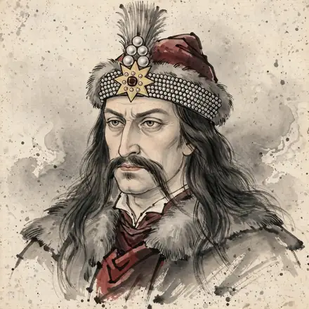
Raised as a hostage inside the enemy's court, he came home to rule a buffer state between two empires.
이야기 · 공개 중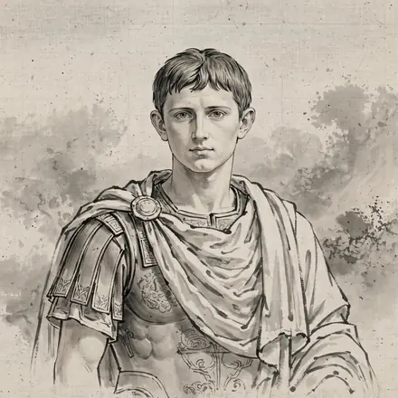
Rome stabbed Caesar for reaching for a crown.
이야기 · 공개 중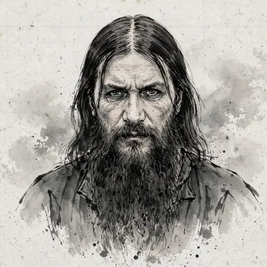
No office, no title, no ordination — just a telegram that stopped a prince's bleeding.
이야기 · 공개 중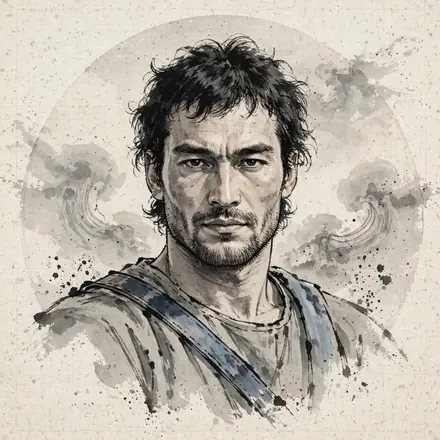
A gladiator owned as inventory walked out of the school with kitchen knives, came down off Vesuvius on ropes of vine, beat Rome's consuls — and vanished so completely that his enemies never found the body.
이야기 · 공개 중플레이 · 무료 게임
게임은 당분간 영어로만 제공됩니다 — 번역이 준비 중입니다.

이야기와 노트

A king, one hundred and eighty palace ladies, and a drill that stopped being a joke — the interview that made Sun Tzu a general.
From Chapter 78 of the Tao Te Ching, in James Legge's translation (1891).

A river never wins an argument with the rock. It flows around it, keeps moving, and lets time do the heavy work.
From Chapter 1 of The Art of War, in Lionel Giles's translation (1910).

The part of the cup you actually use is the part that isn't there. Laozi's riddle about emptiness, wheels, and rooms.
보기


읽기 — Chinese Classics, Decoded


팔로우와 듣기
소개
Samdapau는 고전을 처음 배웠던 그 방식 그대로 다시 전합니다 — 식탁과 회의실에서, 책에서 그 이름을 찾기 훨씬 전에 누군가의 한 수가 실제로 펼쳐지는 것을 보고 배웠던 방식. 한 사람, 하나의 어려운 선택, 그리고 그 안에 숨은 오래된 지혜.
이야기꾼이 어디서 왔는지는, 또 다른 날의 이야기입니다.